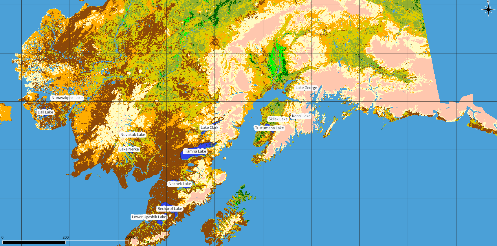

5. စတင်အသုံးပြုခြင်း (Getting Started)
ဤအခန်းတွင် QGIS ထည့်သွင်းအသုံးပြုခြင်း၊ QGIS တွင် ထည့်သွင်းလေ့ကျင့်နိုင်သော နမူနာအချက်အလက်များ ဒေါင်းလုတ်ရယူခြင်း၊ raster နှင့် vector များကို ထည့်သွင်းကြည့်ရှုခြင်းကဲ့သို့သော ရိုးရှင်းသည့် ကနဦးလုပ်ဆောင်ချက်များ ဆောင်ရွက်ခြင်းတို့ ပါဝင်ပါသည်။
5.1. QGIS Software ထည့်သွင်းအသုံးပြုခြင်း (Installing QGIS)
QGIS Software ကို မိမိအသုံးပြုမည့် platform အမျိုးအစားပေါ်မူတည်၍ နည်းလမ်းအမျိုးမျိုးဖြင့် ထည့်သွင်းအသုံးပြုနိုင်ပါသည်။
5.1.1. Binary ဖိုင်များမှ ထည့်သွင်းအသုံးပြုခြင်း (Installing from binaries)
 MS Windows နှင့်
MS Windows နှင့်  macOS များအတွက် အလွယ်တကူထည့်သွင်းအသုံးပြုနိုင်သော Standard Installer များရှိပါသည်။
ထို့အပြင် GNU/Linux
macOS များအတွက် အလွယ်တကူထည့်သွင်းအသုံးပြုနိုင်သော Standard Installer များရှိပါသည်။
ထို့အပြင် GNU/Linux  စနစ်များအတွက် rpm နှင့် deb ကဲ့သို့သော Binary Package များနှင့်
Software Repositories (Software များကို စုစည်းထားသောနေရာ) များကိုလည်း ပံ့ပိုးပေးထားပါသည်။
စနစ်များအတွက် rpm နှင့် deb ကဲ့သို့သော Binary Package များနှင့်
Software Repositories (Software များကို စုစည်းထားသောနေရာ) များကိုလည်း ပံ့ပိုးပေးထားပါသည်။
မိမိအသုံးပြုသည့်စက်၏ စွမ်းဆောင်ရည်/လုပ်ဆောင်သည့်စနစ်နှင့် ကိုက်ညီမည့်အကြောင်းအရာများ၊ လမ်းညွှန်ချက်များကို ပိုမိုသိရှိလိုပါက https://download.qgis.org သို့ ဝင်ရောက်ကြည့်ရှုနိုင်ပါသည်။
5.1.2. မူလအရင်းအမြစ်မှ ထည့်သွင်းအသုံးပြုခြင်း (Installing from source)
မူလအရင်းအမြစ်များမှ QGIS အား ထည့်သွင်းအသုံးပြုလိုပါက ထည့်သွင်းခြင်းလမ်းညွှန်ချက်တွင် လေ့လာနိုင်ပါသည်။
၎င်းတို့ကို INSTALL ဟုအမည်ပေးထားသောဖိုင်တွင် QGIS source code ဖြင့်ဖော်ပြထားပါသည်။
ဤလမ်းညွှန်ချက်များကို https://github.com/qgis/QGIS/blob/master/INSTALL.md တွင်လည်း ဝင်ရောက်ကြည့်ရှုနိုင်ပါသည်။
ပြင်ဆင်ဆဲ version ကို အသုံးမပြုချင်ပဲ ဖြန့်ဝေပြီးသား version ကိုအသုံးပြုချင်ပါက အထက်တွင်ဖော်ပြထားသော လင့်ခ်မှ master ဆိုသည့်နေရာတွင် Release Branch (များသောအားဖြင့်
release-X_Y ပုံစံ) ဖြင့် အစားထိုးသင့်သည်။ (Software ထည့်သွင်းခြင်း ညွန်ကြားချက် ကွာခြားမှုရှိနိုင်ပါသည်)
5.1.3. ပြင်ပမီဒီယာများတွင် ထည့်သွင်းအသုံးပြုခြင်း (Installing on external media)
QGIS ကို (Plugin (သီးခြားအထူးလုပ်ဆောင်ချက်များ)နှင့် setting များ အားလုံးပါဝင်လျက်) Flash drive ကဲ့သို့ ပြင်ပမီဒီယာများတွင် ထည့်သွင်းနိုင်ပါသည်။ ၎င်းကို ပုံမှန် user profile လမ်းကြောင်း ပြင်ဆင်မည့် –profiles-path တခု သတ်မှတ်ပေးပြီး QSettings အား ထိုပြင်ဆင်သတ်မှတ်ထားသော လမ်းကြောင်းကိုအသုံးပြုစေခြင်းဖြင့် ရရှိနိုင်ပါသည်။ နောက်ထပ်အချက်အလက်များအတွက် စနစ်သတ်မှတ်ချက်များ (System Settings) ဆိုသည့် အပိုင်းတွင် ကြည့်ရှုနိုင်ပါသည်။
5.1.4. နမူနာဒေတာများ ရယူခြင်း (Downloading sample data)
ဤအသုံးပြုသူ လမ်းညွှန်တွင် QGIS sample dataset များ (ဒေတာအစု) (Alaska dataset ဟုလည်းခေါ်သည်) ကို
အခြေခံထားသည့် ဥပမာများပါဝင်ပါသည်။ နမူနာဒေတာများကို https://github.com/qgis/QGIS-Sample-Data/archive/master.zip တွင်
ဒေါင်းလုတ်ရယူပြီး အဆိုပါဖိုင်အစုအား အသုံးပြုသူ၏ system ရှိ သင့်လျော်မည့်နေရာတစ်ခုတွင် ဖြည်၍အသုံးပြုနိုင်ပါသည်။
Alaska dataset တွင် ဤအသုံးပြုသူလမ်းညွှန်ရှိ ဥပမာများနှင့် screenshots ပုံများတွင် အသုံးပြုထားသော GIS data များအားလုံး ပါဝင်ပါသည်။ GRASS database အသေးလေးတစ်ခုလည်း ပါဝင်ပါသည်။ QGIS sample datasets အတွက် ပုံရိပ်ချစနစ် (Projection) မှာ Alaska Albers Equal Area ဖြစ်ပြီး ယူနစ်ကို ပေ ဖြင့်ဖော်ပြသည်။ EPSG (European Petroleum Survey Group) ကုဒ်နံပါတ် မှာ 2964 ဖြစ်ပါသည်။
PROJCS["Albers Equal Area",
GEOGCS["NAD27",
DATUM["North_American_Datum_1927",
SPHEROID["Clarke 1866",6378206.4,294.978698213898
TOWGS84[-3,142,183,0,0,0,0],
AUTHORITY["EPSG","6267"]],
PRIMEM["Greenwich",0,
AUTHORITY["EPSG","8901"]],
UNIT["degree",0.0174532925199433,
AUTHORITY["EPSG","7008"]],,
AUTHORITY["EPSG","9108"]],
AUTHORITY["EPSG","4267"]],
PROJECTION["Albers_Conic_Equal_Area"],
PARAMETER["standard_parallel_1",55],
PARAMETER["standard_parallel_2",65],
PARAMETER["latitude_of_center",50],
PARAMETER["longitude_of_center",-154],
PARAMETER["false_easting",0],
PARAMETER["false_northing",0],
UNIT["us_survey_feet",0.3048006096012192]]
QGIS ကို GRASS အတွက် Graphical front end (ဂရပ်ဖစ် မျက်နှာပြင်) အနေဖြင့်အသုံးပြုလိုပါက GRASS GIS ၏ တရားဝင်ဝက်ဘ်ဆိုဒ် ဖြစ်သော https://grass.osgeo.org/download/data/ တွင် နမူနာတည်နေရာများ (ဥပမာ- Spearfish သို့မဟုတ် South Dakota) ကို ရွေးချယ်ရှာဖွေနိုင်ပါသည်။
5.2. QGIS ဖွင့်ခြင်း/ပိတ်ခြင်း (Starting and stopping QGIS)
QGIS ကို ကွန်ပျူတာရှိ အခြား application များနည်းတူ စတင်အသုံးပြုနိုင်ပါသည်။ QGIS ကို အောက်ပါနည်းလမ်းများကို အသုံးပြု၍ စတင်ဖွင့်နိုင်ပါသည်-
QGIS ကို
Applications menu ၊ Start menu ၊ or Dock ကို အသုံးပြုခြင်း၊သင့် Application folder ထဲရှိ QGIS icon သို့မဟုတ် Desktop shortcut icon အား double click (ကလစ် ၂ ချက်နှိပ်ခြင်း) ပြုလုပ်ခြင်း၊
.qgzor.qgsfile extension ပါရှိသည့် ရှိပြီးသား QGIS project file တစ်ခုခုအား double click နှိပ်ခြင်း၊ (မှတ်ချက်- ၎င်းလုပ်ဆောင်ချက်သည် အဆိုပါ project file ကိုပါ ဖွင့်စေမည်ဖြစ်ပါသည်)QGIS ကို စက်အတွင်း ထည့်သွင်းပြီးဖြစ်ပါက command prompt တွင်
qgisဟု typing ရိုက်၍ လည်းကောင်း ဖွင့်နိုင်သည်။
QGIS အား ပြန်ပိတ်ရန်-
- Menu မှတဆင့် ကိုနှိပ်ပါ၊
သို့မဟုတ် keyboard shortcut Ctrl+Q ကိုအသုံးပြုပါ။
နောက်တစ်နည်းအနေဖြင့်
သို့မဟုတ် shortcut Cmd+Q ကို နှိပ်၍ပိတ်နိုင်ပါသည်။သို့မဟုတ် QGIS မျက်နှာစာ၏ ညာဘက်ထောင့်ရှိ အနီရောင်ကြက်ခြေခတ်အမှတ်အသားကိုနှိပ်၍လည်း ပိတ်နိုင်ပါသည်။
5.3. နမူနာကဏ္ဍ - Raster နှင့် Vector Layer များကို ထည့်သွင်းခြင်း (Sample Session: Loading raster and vector layers)
ယခု (QGIS installed) ကို ထည့်သွင်းပြီး sample dataset ကို
ရယူပြီးဖြစ်လျှင် ပထမဦးဆုံးနမူနာလေ့ကျင့်နိုင်ရန် ပြသသွားပါမည်။ ဤဥပမာတွင် raster နှင့် vector layer များကို ထည့်သွင်းကြည့်ရှုရန်
အထက်တွင် ဖော်ပြထားသည့် unzipped ပြုလုပ်ထားသော qgis_sample_data ရှိ
landcoverraster layer (qgis_sample_data/raster/landcover.img) နှင့်lakesvector layer (qgis_sample_data/gml/lakes.gml) များကို အသုံးပြုသွားပါမည်။
QGIS အဖွင့်အပိတ်ပြုလုပ်ခြင်း (QGIS ဖွင့်ခြင်း/ပိတ်ခြင်း (Starting and stopping QGIS)) တွင် ဖော်ပြထားသည့်အတိုင်း QGIS ကို ဖွင့်ပါ။
အသုံးပြုမည့်ဒေတာသည်
Albers Equal Areaဖြစ်သည့်အတွက် project ၏ Coordinate Reference System - CRS (ရည်ညွှန်းကိုဩဒိနိတ်စနစ်) ကိုလည်း အဆိုပါ Albers Equal Area အတိုင်း ပြင်ဆင်ရမည်။QGIS မျက်နှာစာ၏ ညာဘက်အောက်ထောင့်ရှိ
 Select projection ခလုတ်ကို နှိပ်ပါ။
ထိုအခါ “Project properties” window သည် CRS tab နှင့်အတူ ပွင့်လာပါလိမ့်မည်။
Select projection ခလုတ်ကို နှိပ်ပါ။
ထိုအခါ “Project properties” window သည် CRS tab နှင့်အတူ ပွင့်လာပါလိမ့်မည်။ Filter နေရာတွင် ̀`2964` ကို ရိုက်ထည့်ပါ။
Filter နေရာတွင် ̀`2964` ကို ရိုက်ထည့်ပါ။NAD27 / Alaska AlbersCRS ကို ရွေးချယ်ပါ။
Fig. 5.1 Data ၏ Coordinate Reference System ရွေးချယ်ခြင်း
OK ကို နှိပ်ပါ။
Note
OK ကို နှိပ်ပြီးနောက် ပေါ်လာနိုင်သည့် “ballpark transform” ဟူသော သတိပေးချက်ကို လျစ်လျူရှုခြင်း/ပိတ်ခြင်း ပြုလုပ်နိုင်ပါသည်။
QGIS တွင် ဖိုင်များ ထည့်သွင်းပါ။
 Open Data Source Manager icon အား Click နှိပ်ပါ။
ထိုအခါ Data Source Manager မှာ browser mode ဖြင့် ပွင့်လာမည်ဖြစ်သည်။
Open Data Source Manager icon အား Click နှိပ်ပါ။
ထိုအခါ Data Source Manager မှာ browser mode ဖြင့် ပွင့်လာမည်ဖြစ်သည်။Browser ထဲမှ
qgis_sample_data/raster/folder ကို ရှာဖွေပါ။ERDAS IMG file
 landcover.img ကိုရွေးချယ်၍ click နှစ်ချက်နှိပ်ပါ။
Data Source Manager window သည် ပွင့်နေဆဲဖြစ်သော်လည်း နောက်ခံမျက်နှာပြင်တွင် landcover layer အား ထည့်သွင်းပြီးဖြစ်နေပါမည်။
landcover.img ကိုရွေးချယ်၍ click နှစ်ချက်နှိပ်ပါ။
Data Source Manager window သည် ပွင့်နေဆဲဖြစ်သော်လည်း နောက်ခံမျက်နှာပြင်တွင် landcover layer အား ထည့်သွင်းပြီးဖြစ်နေပါမည်။
Fig. 5.2 QGIS တွင် Project အသစ်တစ်ခုထဲသို့ Data များထည့်သွင်းခြင်း
Lakes data အား ထည့်သွင်းရန်
qgis_sample_data/gml/ဖိုင်အား ရှာဖွေပြီး lakes.gml ကို
QGIS main dialog ထဲသို့ ဖိ၍ဆွဲထည့်ပါ။ (သို့မဟုတ် အထက်တွင်ဖော်ပြထားသည့်အတိုင်း click နှစ်ချက်နှိပ်ပါ။)
lakes.gml ကို
QGIS main dialog ထဲသို့ ဖိ၍ဆွဲထည့်ပါ။ (သို့မဟုတ် အထက်တွင်ဖော်ပြထားသည့်အတိုင်း click နှစ်ချက်နှိပ်ပါ။)Select Items to Add ဆိုသည့် dialog ပွင့်လာပြီး ပါဝင်သောဖိုင်များကို Scan ပြုလုပ်ပါလိမ့်မည်။ အကြောင်းမှာ
.gmlဖိုင်အမျိုးအစားသည် တစ်ခုထက်ပိုသော အလွှာများကို သိမ်းဆည်းထားနိုင်သောကြောင့် ဖြစ်သည်။Fig. 5.3 ဖိုင်ထဲရှိ layers များကို ရွေးချယ်ခြင်း
ဤနေရာတွင်
 lakes layer တစ်ခုတည်းသာ ရှိသည့်အတွက်
အဆိုပါ layer ကို ရွေးချယ်၍ Add Layers ကို နှိပ်ပါ။
lakes layer တစ်ခုတည်းသာ ရှိသည့်အတွက်
အဆိုပါ layer ကို ရွေးချယ်၍ Add Layers ကို နှိပ်ပါ။ထိုအခါ Lakes layer သည် Layers panel ထဲသို့ ရောက်ရှိသွားပါမည်။
Data Source Manager ကို ပိတ်ပါ။
Layers panel ရှိ lakes အလွှာဘေးတွင် Layer has no coordinate reference system set (အလွှာတွင် CRS မသတ်မှတ်ရသေးပါ) ဆိုပြီး ပြသနေသည်ကို တွေ့ရလိမ့်မည်။ ထိုအရာကို ချိန်ညှိကြည့်ရအောင်။
{kind=link}
icon ကို နှိပ်ပါက ကိုဩဒိနိတ်စနစ် ရွေးချယ်နိုင်မည့် Coordinate Reference System Selector dialog ပွင့်လာမည်ဖြစ်ပါသည်။
အရှေ့တွင် ပြုလုပ်ခဲ့သလိုမျိုး NAD27 / Alaska Albers CRS ကိုရှာပြီး ရွေးချယ်ပေးပါ။
OK ကို နှိပ်ပါ။
ယခုအခါ သင်၏ project တွင် မတူညီသော အရောင်တစ်မျိုးစီဖြင့် တွေ့မြင်ရသော layer နှစ်ခု ရောက်ရှိနေမည်ဖြစ်ပါသည်။ Lakes layer ကို မိမိစိတ်ကြိုက်ပြင်ဆင်မှုများ လုပ်ဆောင်ကြည့်ကြပါစို့။
Navigation toolbar ပေါ်ရှိ
 Zoom In tool ကို ရွေးချယ်ပါ။
Zoom In tool ကို ရွေးချယ်ပါ။ရေကန်တချို့ရှိနေသော ဧရိယာတခုကို Zoom (အကျယ်ချဲ့) လုပ်ကြည့်ပါ။
Map legend (မြေပုံရည်ညွှန်းချက်) ရှိ
lakeslayer ကို click နှစ်ချက်နှိပ်၍ Properties dialog ကို ဖွင့်ပါ။ရေကန်များ၏ အရောင်ကို ပြောင်းလဲနိုင်ရန်-
 Symbology tab ကို click နှိပ်ပါ။
Symbology tab ကို click နှိပ်ပါ။အရောင်ထည့်ရန် fill color တွင် အပြာရောင်ကို ရွေးချယ်ပါ။

Fig. 5.4 ရေကန်အလွှာအတွက်အရောင်ရွေးချယ်ခြင်း
OK ကို နှိပ်ပြီးနောက် map canvas (မြေပုံမျက်နှာပြင်) ပေါ်တွင် ရေကန်အရောင်များကို အပြာရောင်ဖြင့် မြင်တွေ့ရမည်ဖြစ်ပါသည်။
ရေကန်၏ အမည်များကို ပြသရန်-
Properties dialog ရှိ
lakeslayer ကို ပြန်ဖွင့်ပါ။ Labels ကို click နှိပ်ပါ။
Labels ကို click နှိပ်ပါ။Label တပ်ရန်အတွက် drop-down menu မှ Single labels ကို ရွေးပါ။
Label with list မှ
NAMESfield ကို ရွေးပါ။
Fig. 5.5 ရေကန်အမည်များဖော်ပြခြင်း
Apply ကို နှိပ်ပြီးနောက် ရေကန်နယ်နိမိတ်များပေါ်တွင် ရေကန်များ၏အမည်ကို မြင်တွေ့ရမည်ဖြစ်ပါသည်။
Label များကို မြင်သာစေရန်/ ဖတ်ရှုရလွယ်ကူစေရန် label များတွင် အဖြူရောင် buffer (အနားကွပ်) ထည့်ပေးခြင်း ပြုလုပ်နိုင်ပါသည်-
လက်ဝဲဘက်ရှိ list ထဲမှ Buffer tab ကို Click နှိပ်ပါ။
 Draw text buffer ကို အမှန်ခြစ်ပြုလုပ်ပါ။
Draw text buffer ကို အမှန်ခြစ်ပြုလုပ်ပါ။Buffer ၏အရွယ်အစား ကို
3ကိုရွေးချယ်ပါ။Apply ကို နှိပ်ပါ။
အဆင်ပြေမှုရှိ/မရှိ ပြန်လည် ကြည့်ရှုပြီး Buffer ၏ အရွယ်အစားကို လိုအပ်သလို ပြောင်းလဲနိုင်ပါသည်။
စိတ်ကြိုက်ပြင်ဆင်ပြီးပါက OK ကို နှိပ်၍ Layer Properties dialog ကိုပိတ်ပါ။

Fig. 5.6 Label များကို Buffer ပြုလုပ်ခြင်း
မြေပုံကိုပုံဖော်ရန် နှင့် QGIS မှ ဖိုင်အမျိုးအစား အမျိုးမျိုးသို့ ပြောင်းလဲထုတ်ယူ (export) ရန် မွမ်းမံပြင်ဆင်မှုများ (Decorations) ပြုလုပ်ကြည့်ရအောင်-
menu ကိုရွေးချယ်ပါ။
Dialog ပွင့်လာပါက
Enable Scale Bar option ကို အမှန်ခြစ်ပါ။Dialog ထဲရှိ ရွေးချယ်မှုများကို လိုအပ်သလို စိတ်ကြိုက်ပြင်ဆင်ပါ။
Apply ကို နှိပ်ပါ။
အလားတူပင် မွမ်းမံပြင်ဆင်မှုများပြုလုပ်သည့် menu မှ မြောက်အရပ်ပြမြား (North Arrow)၊ မူပိုင်ခွင့် စသည့် အကြောင်းအရာများကို မြေပုံပေါ် တွင် မိမိစိတ်ကြိုက်ထပ်မံဖြည့်သွင်းနိုင်ပါသည်။
မြေပုံကို Image ဖိုင်အဖြစ် ပြောင်းလဲထုတ်ယူရန်
 ကို click နှိပ်ပါ။
ကို click နှိပ်ပါ။Dialog ပွင့်လာသောအခါ Save ကို နှိပ်ပါ။
ဖိုင်သိမ်းဆည်းမည့်နေရာ၊ ဖိုင်အမျိုးအစားတို့ကို ရွေးချယ်ပြီး သိမ်းဆည်းဖို့အတည်ပြုရန် Save ကိုထပ်နှိပ်ပါ။
ပြုပြုင်ပြောင်းလဲထားသော project ဖိုင်ကို
.qgzဖိုင်အမျိုးအစားအဖြစ် သိမ်းဆည်းရန် ကို နှိပ်ပါ။
ကို နှိပ်ပါ။ Fig. 5.7 ပြင်ဆင်မှုများပြုလုပ်ထားပြီး Export ထုတ်ထားသော မြေပုံအား ပြသခြင်း
ဒါပါပဲ။ ယခုအခါ သင်သည် QGIS တွင် raster နှင့် vector layer များကို ထည့်သွင်းကြည့်ရှုရန်၊ ပြင်ဆင်ရန်နှင့် အခြား software များတွင် အသုံးပြုနိုင်သော image format အဖြစ်သို့ ပြောင်းလဲထုတ်ယူရန် မည်မျှ လွယ်ကူရိုးရှင်းကြောင်း တွေ့မြင်နိုင်ပြီဖြစ်ပါသည်။ ဆက်လက်၍ QGIS ၏ လုပ်ဆောင်နိုင်မှုများ၊ သဘောသဘာဝများ၊ setting များနှင့် အသုံးပြုနည်းများအကြောင်းကို ဆက်လက်လေ့လာနိုင်ပါသည်။
Note
တစ်ဆင့်ပြီးတစ်ဆင့် လုပ်ဆောင်ရသောလေ့ကျင့်ခန်းများဖြင့် QGIS ကို ဆက်လက်လေ့လာလိုပါက Training manual (သင်တန်းလက်စွဲ) တွင် လေ့လာနိုင်ပါသည်။